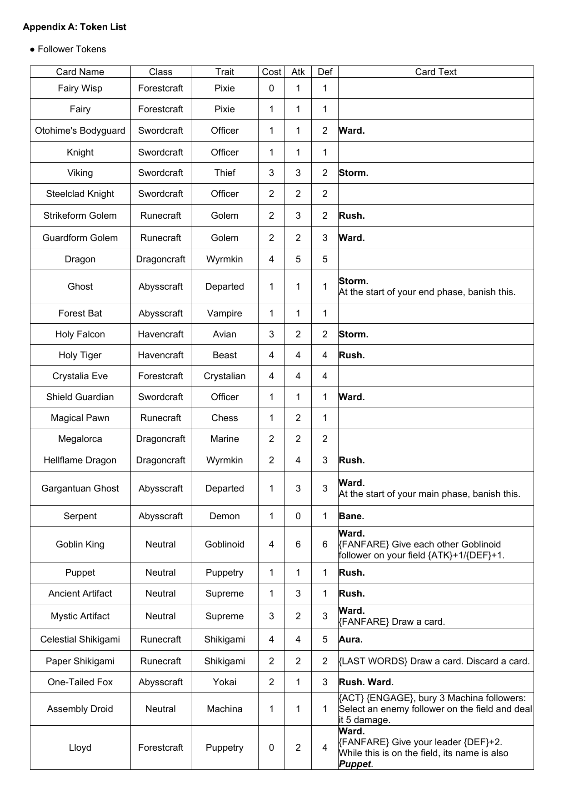
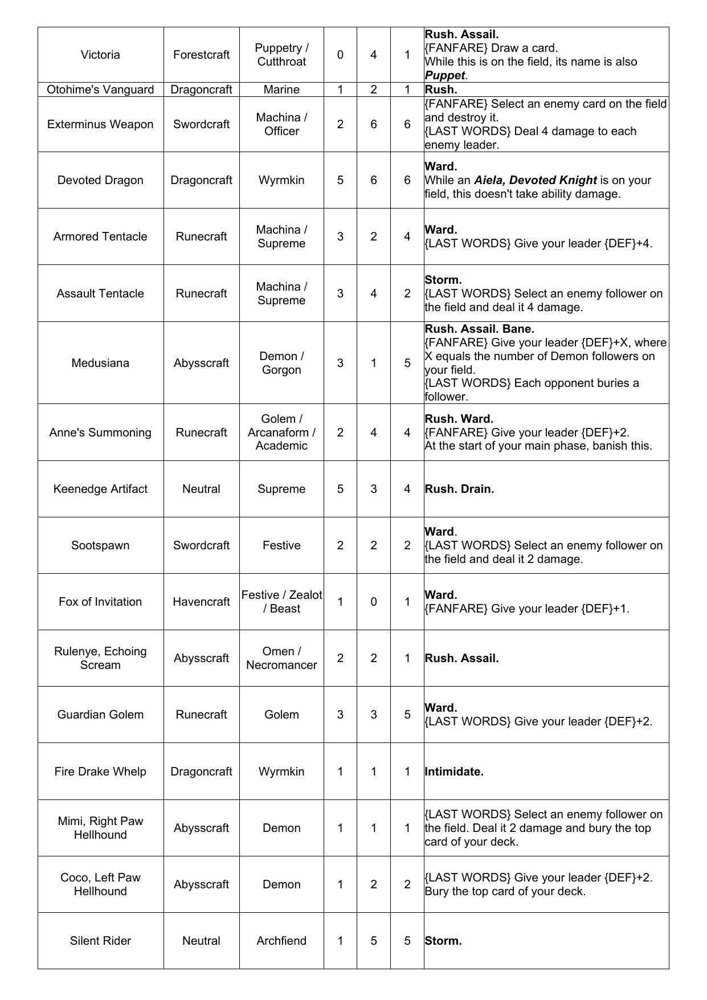
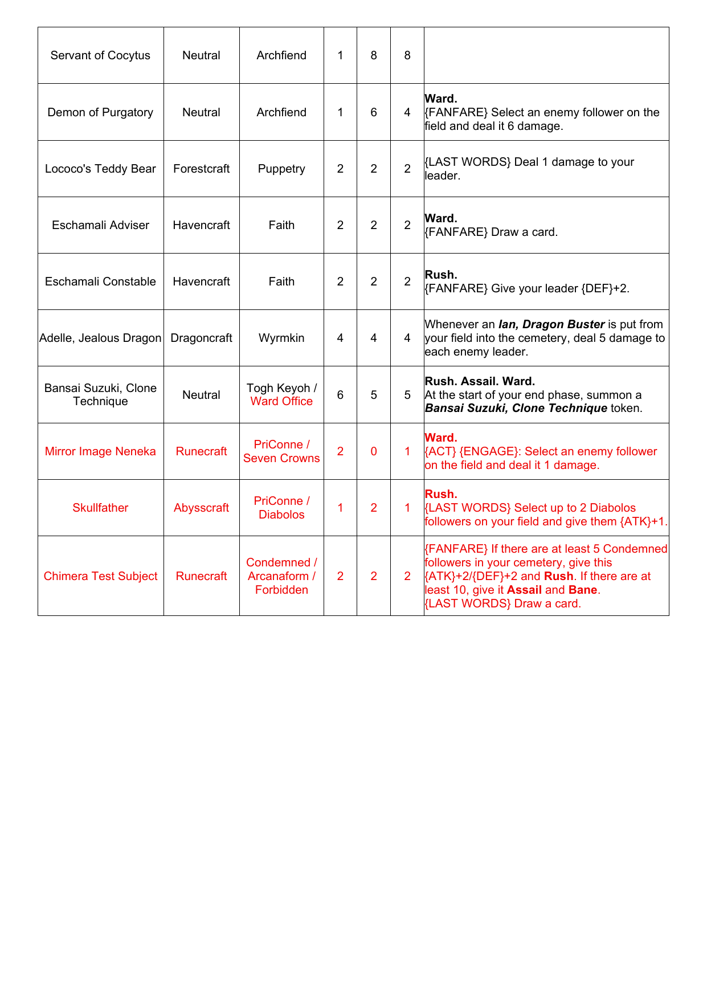
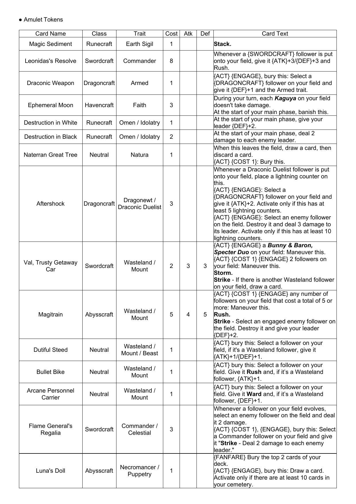
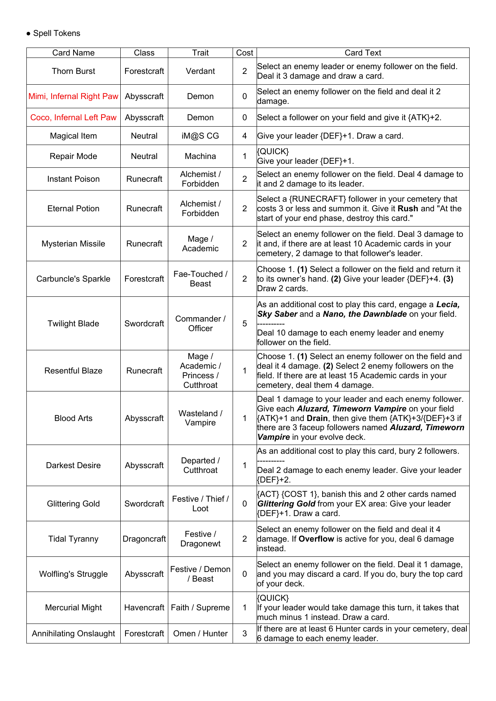
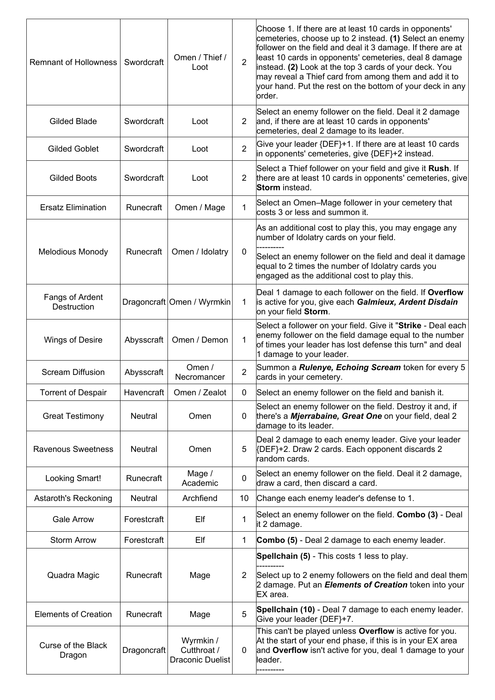
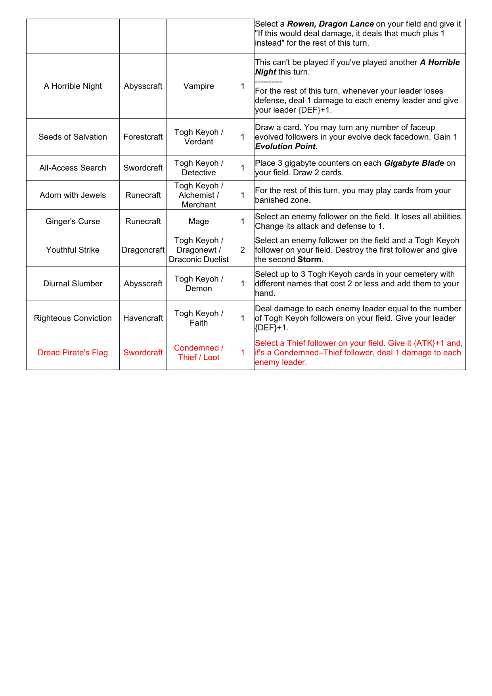
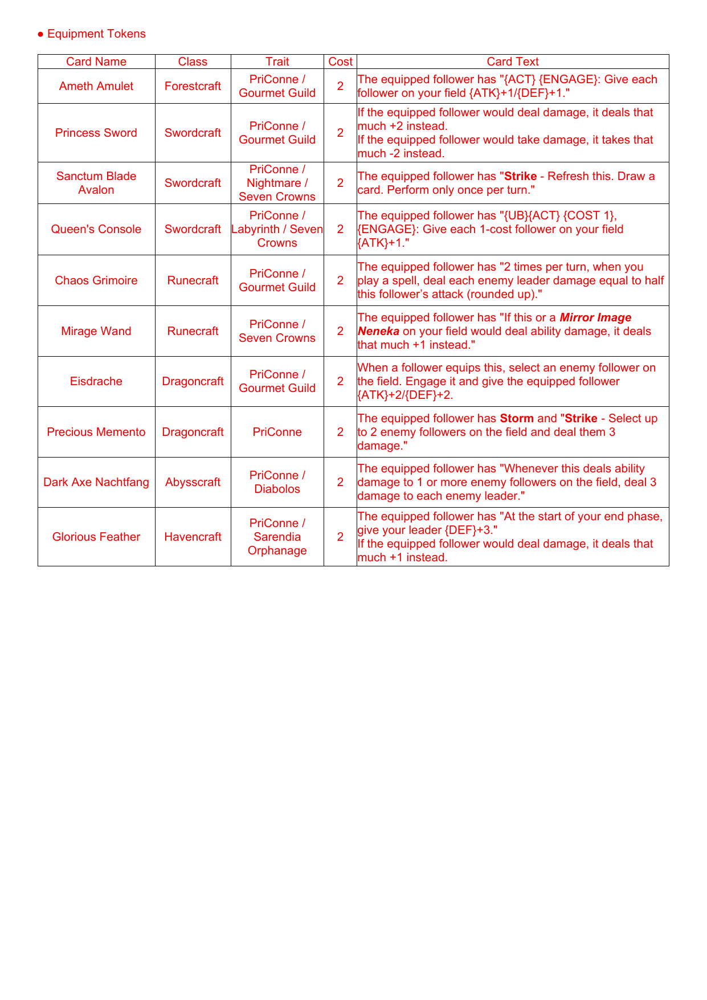
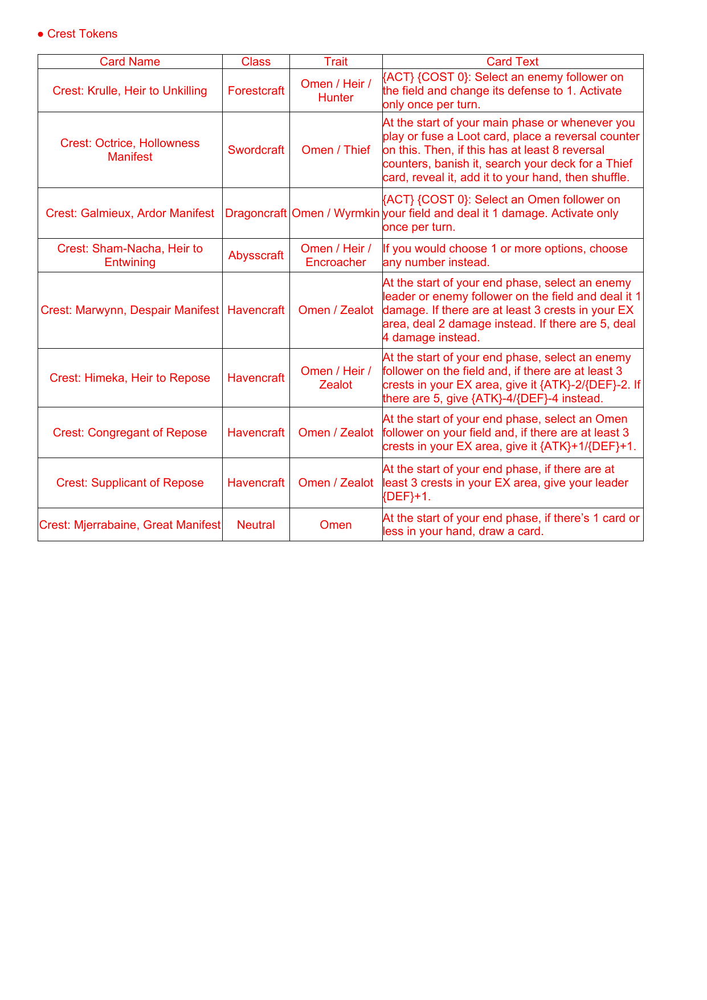

1Game Overview
1.1.Number of Players
1.1.1.A standard game is played by two players. The Comprehensive Rules do not currently support games played by more than two players.
1.2.Game Outcomes
1.2.1.The game concludes when a player loses. The player who didn't lose is considered the winner.
1.2.1.1.If a player's leader's defense is 0 or less, that player is considered to have fulfilled a loss condition.
1.2.1.2.If a player must draw a card when there are no cards remaining in their deck, that player is considered to have fulfilled a loss condition.
1.2.2.If all players lose simultaneously, the game ends in a draw.
1.2.3.Players may concede at any point during the game. When a player concedes, they lose the game immediately, and the game concludes; Confirmation Timing (10.5) does not occur.
1.2.3.1.The act of conceding is not affected by any card. A card effect cannot force a player to concede, nor can a replacement effect replace a loss resulting from concession.
1.2.4.A card may produce an effect that causes a player to win or lose the game. In such cases, the player wins or loses immediately when the effect is processed, and the game concludes; Confirmation Timing (10.5) does not occur.
1.3.General Rules
1.3.1.If card text should ever be contradicted by the Comprehensive Rules, the card text takes precedence.
1.3.2.If a player is required to perform an impossible action for any reason, the action is not performed. Similarly, if an effect requires a player to perform multiple actions, part of which cannot be performed, the player performs as many actions as possible.
1.3.2.1.If required to put something into a state that it is already in, that action is not performed.
1.3.2.2.If, for any reason, an action is to be performed zero or a negative number of times, or if an action would be based on zero or a negative value (aside from adding, subtracting, or comparing), the action is not performed at all. A negative value never indicates an opposite action.
If instructed to deal 0 damage, that instance of damage does not happen at all. (Damage is not considered to have been dealt.)
1.3.2.2.1.If it becomes necessary to perform an action that would be based on a negative value (aside from adding, subtracting), treat the value as zero.
An effect has reduced the cost of a card to a negative value. That card would be played for zero play points.
1.3.2.3.If multiple effects that require a player to perform a certain action are produced simultaneously, and it is not possible to perform all of them, the player is required to select and perform as many of the actions as possible.
1.3.2.4.Numeric information possessed by players or cards can be zero or a negative value, unless an upper or lower limit is specified.
1.3.2.4.1.When a certain value would rise above or fall below an upper or lower limit, it instead becomes the value specified by the limit.
1.3.3.If a card's effect instructs a player to perform an action that is prohibited by another active effect, the prohibiting effect takes precedence.
1.3.4.In the case that multiple players are required to make a selection simultaneously while processing effects, if it is before the game, players make their selections in turn order. If it is during the game, the active player selects first. The non-active player makes their selection after the active player makes their selection known to them.
1.3.4.1.If a certain effect applies to multiple players, and that effect requires executing multiple processes, each process that does not involve selection is executed simultaneously, while each process that does involve selection is executed starting with the active player.
An effect reads, "Each player draws a card. Each player may put a follower from their hand onto the field." This effect is handled in the following order: (1) Both players draw a card. (2) The active player may put a follower from their hand onto the field. (3) The nonactive player may put a follower from their hand onto the field.
1.3.5.When a player is required by a card or a rule to select a number, the player must select an integer equal to or greater than zero, unless indicated otherwise. Fractions less than one and negative numbers may not be selected.
1.3.5.1.If a card or rule specifies a numerical limit (e.g., "up to X"), the player may choose zero as long as a minimum value isn't specified.
1.3.6.If reference is made to information that a card does not possess, the following rules apply.
1.3.6.1.When counting the number of cards in a group which possess that information or different values of that information, the card in question does not count.
1.3.6.2.A condition which depends on the comparison of that information to some other information is never satisfied.
1.3.6.3.A condition which depends on the comparison of that information to some other information is never satisfied.
2Card Information
2.1.Card Name
2.1.1.This is the card's unique name.
2.1.2.Whenever a rule or card text contains "[card name]" (a name written in bold and italics), it refers to any card with the same name or, depending on the context, any card whose name contains that name. In reminder text or other contexts where the surrounding text is italicized, the card name may be unitalicized as a result of reverse- ① Card Name ② Class ③ Card Type ④ Trait ⑤ Cost ⑥ Card Text ⑦ Attack ⑧ Defense ⑨ Token Information ⑩ Card Art ⑪ Rarity ⑫ Miscellaneous ⑬ Alternate Name ⑭ Universe Leader italicization.
2.1.2.1.An alternate name (2.13) cannot be referred to in this way unless referred to in its entirety.
2.2.Class
2.2.1.This indicates the class to which the card belongs.
2.2.2.Classes are represented by icons: Neutral Forestcraft Swordcraft Runecraft
2.9.Token Information
2.9.1.This provides information about tokens referred to by the card's effect(s).
2.9.2.This information is provided for players' reference; it does not have any significance in regard to the rules.
2.10.Card Art
2.10.1.This is the card's illustration.
2.10.2.Card art has no bearing on gameplay. Dragoncraft Abysscraft Havencraft
2.2.3.Class information affects deck construction and is referred to by some card abilities.
2.3.Card Type
2.3.1.This indicates the card's type.
2.3.2.The primary card types are "leader," "follower," "amulet," "spell," and "crest."
2.3.3.Some cards have a special type.
2.3.3.1.Special types include "evolved" cards and "advanced" cards.
2.3.4.Whenever a rule, ability, or effect refers to only a card type, it refers to all cards of that type.
2.4.Trait
2.4.1.This indicates the card's traits.
2.4.2.Traits don't have any significance in regard to the rules, but other cards may refer to them.
2.5.Cost
2.5.1.This indicates the amount of play points that the player must pay to play the card (10.4.3). Whenever a card refers to a "cost," it is referring to this displayed number.
2.6.Card Text
2.6.1.This indicates the card's unique abilities, effects, and other information.
2.6.2.Sentences that are enclosed in parentheses are called "explanatory text" or "reminder text." Although these are a part of a card's text, their only purpose is to clarify how an ability works; they serve no other game function.
2.7.Attack
2.7.1.This signifies the base amount of damage the card deals when it attacks.
2.7.1.1.Attack is represented by the icon in card text.
2.8.Defense
2.8.1.This signifies the amount of damage the card must take before it is destroyed.
2.8.1.1.Defense is represented by the icon in card text.
2.8.2.Whenever a follower or leader takes damage, that card's defense is reduced by the same amount of damage (5.14.1).
2.8.3.Although not indicated on leader cards, leaders also have defense.
2.8.3.1.Unless otherwise indicated, a leader's defense is 20.
2.11.Rarity
2.11.1.This indicates the card's rarity.
2.11.2.Rarity has no bearing on gameplay.
2.12.Miscellaneous
2.12.1.This part of the card contains miscellaneous information such as collector numbers and copyright information, as well as universe information.
2.12.2.Aside from the following exceptions, this information has no bearing on gameplay.
2.12.2.1.Universe information can affect deck construction.
2.12.2.2.Collector numbers are used to distinguish between the front and back face of a double-faced card (2.14).
2.13.Alternate Name
2.13.1.Some cards have an alternate name in addition to their regular card name.
2.13.2.Whenever an ability or effect refers to a card's alternate name in its entirety, it refers to the card name of the card with that alternate name.
2.14.Double-Faced Cards
2.14.1.A double-faced card is a card that has information on both sides.
2.14.2.The "front face" of a double-faced card is the side with its collector number, while the other side is the "back face."
2.14.2.1.When in a zone other than the field, evolve zone, or evolve deck area, a double-faced card is treated as having the information of its front face.
2.14.3.When put onto the field or into the evolve zone, a double-faced card should be placed so that the appropriate face, as specified by rules or effects, is visible to all players.
2.14.3.1.When referencing the information of a double-faced card on the field or in the evolve zone, reference the information of the visible face.
3Player Information
3.1.Owners and Controllers
3.1.1.The "owner" of a card is the player who physically owns the card and started the game with it in their deck. When the game ends, each player returns the cards they own back into their deck.
3.1.2.The "controller" of a card, ability, or effect is the player who is currently using it. The controller of a card put in a given zone is the player to whom that zone belongs.
3.1.2.1.A passive ability's controller is the player who controls the card with the ability or the effect that produced the ability.
3.1.2.2.An activated ability's controller is the player who played it.
3.1.2.3.An automatic ability's controller is the player who controls the card with the ability or the effect that produced the ability.
3.1.2.4.An effect's controller is the player who controls the ability that produced it.
3.1.2.4.1.If an effect requires a player to perform an action without specifying which player, that effect's controller performs the action.
3.2.Play Points, Evolution Points, and SuperEvolution Points
3.2.1."Play points," "maximum play points," and "evolution points" are types of numeric information that each player possesses.
3.2.2.Play points represent the cost that players must pay to perform certain actions, such as playing a card or evolving a follower (10.4.3).
3.2.3.Maximum play points represent the number of play points a player receives at the start of their turn.
3.2.4.There are lower and upper limits to the amount of play points and maximum play points a player can have. If, during a game, a player's play points or maximum play points would rise above or fall beneath these limits, their play points or maximum play points become equal to the respective limit instead.
3.2.4.1.The lower limit for maximum play points is 0. The upper limit for maximum play points is 10.
3.2.4.2.The lower limit for play points is 0, while the upper limit is equal to the player's current maximum play points.
3.2.5.Evolution points are represented by "Evolution Point" cards and may be used by a player in lieu of 1 play point when playing an evolve ability (12.2).
3.2.5.1.The lower limit for evolution points is 0.
3.2.6.Super-evolution points are represented by "Super-Evolution Point" cards and are used by players for super-evolution (12.2.4).
3.2.6.1.The lower limit for super-evolution points is 0.
3.3.Turns Passed
3.3.1."Turns passed" is a type of numeric information that each player possesses.
3.3.2.A player's turns passed is the number of times they have begun their start phase (7.2) as the active player for the first time in a turn.
3.3.2.1.If a player skips a turn (5.26), that turn does not count towards their turns passed.
3.3.2.2.If a player takes another turn (5.28), that turn counts towards their turns passed.
4Zones
4.1.Zone Basics
4.1.1.Each player possesses one of each zone unless indicated otherwise.
4.1.2.Depending on the zone, card information may or may not be visible to all players. Zones where card information can be viewed by all players are called "public zones," while other zones are called "non-public zones."
4.1.2.1.Whether public or non-public, players are allowed to check the number of cards in any zone at any time.
4.1.2.2.A card in a non-public zone cannot be guaranteed to satisfy a given condition unless it has been revealed to all players by an effect. Even if there is a card in that zone that satisfies the condition, players to whom the zone has been revealed may choose to treat the card as if it didn't exist, as long as it has not been revealed to all players.
4.1.2.3.When in non-public zones, doublefaced cards (2.14) follow the same visibility rules as other cards with regards to which players can check card information.
4.1.2.3.1.Players may hide non-public information on double-faced cards with card sleeves or other means.
4.1.3.Depending on the zone, it may be necessary to track card order. Where necessary, card order is tracked based on the way the cards are stacked above and below one another. For zones where card order is tracked, players may not change the card order unless instructed otherwise.
4.1.3.1.If instructed to move a card to a specific position within a zone where card order is tracked, but there aren't enough cards in the zone to reach the specified position, instead move the card to the position furthest from the starting point from which the specified position is determined.
An ability reads, "Put this card into your deck 3rd from the top," but your deck only has one card. In this case, move the card to the position furthest from the top of your deck; that is, the bottom.
4.1.4.When a card is moved to a different zone, that card is considered to be a new card in that zone unless indicated otherwise. Any applied effects from the previous zone do not carry over to the new zone unless indicated otherwise.
4.1.4.1.There are certain card effects which appear to refer to a card that has just moved zones. In this case, the effect is referring to the card after it has moved.
A card has the Last Words ability "Put this card onto its owner's field and evolve it." In this case, "it" refers to "this card" after it has moved from the cemetery to the field.
4.1.5.When multiple cards are put into the same zone simultaneously, the order in which the cards are placed in the new zone is decided by the player to whom that zone belongs unless indicated otherwise.
4.1.5.1.When multiple cards are simultaneously moved from a public zone to a non-public zone, if the controller of those cards is able to determine the order of their placement, they do so without revealing the order to other players.
4.1.6.When instructed to move a card to a given zone, if the player to whom the zone belongs is not specified, the card is moved to its owner's corresponding zone unless indicated otherwise.
4.2.Card Placement States
4.2.1.Some zones require cards to be placed in a specific way. The different placement states include horizontal and vertical orientation, as well as whether the front or back of the card is showing.
4.2.2.Cards may be "reserved" (upright) or "engaged" (turned sideways). Cards must be in one of these two states at any given time; they cannot simultaneously be in both states nor can they be in neither state.
4.2.2.1.A reserved card is placed vertically and upright from the perspective of its controller.
4.2.2.2.An engaged card is placed horizontally from the perspective of its controller.
4.2.2.3.When a card is put into a zone where placement state is governed, it is placed in the reserved state unless indicated otherwise.
4.2.3.Cards may be "faceup" or "facedown." Cards must be in one of these two states at any given time; they cannot simultaneously be in both states nor can they be in neither state.
4.2.3.1.A faceup card is placed such that its card information is visible.
4.2.3.2.A facedown card is placed such that its card information is not visible.
4.2.3.2.1.A facedown double-faced card (2.14) should be covered so that its information is not visible, with a card sleeve or other means.
4.2.3.3.In general, cards are placed faceup in public zones and facedown in non-public zones.
4.3.Leader Area
4.3.1.Each player places their leader in this zone.
4.3.2.The leader area is a public zone, and card order is not tracked.
4.3.3.Whenever a rule, ability, or effect refers to a "leader" without specifying a zone, it's referring to a leader in the leader area.
4.4.Field
4.4.1.Each player places their followers and amulets in this zone.
4.4.2.Fields are public zones where card order is not tracked and cards have placement states.
4.4.3.In general, when a rule, ability, or effect refers to a "follower," "amulet," or "card," without specifying a zone, it's referring to a follower, amulet, or card on the field.
4.4.3.1.This does not, however, apply to effects that change how a card is played, such as "your [cards] cost [number] to play," which refer to cards played from any zone unless specified.
4.4.4.There is a limit to how many cards a player may have on their field. This limit may be referenced during the game.
4.4.4.1.At the start of the game, each player's field is limited to five cards.
4.4.4.2.When cards are to be moved to or created on a field, if it would result in the field's limit being exceeded, the controller of the effect selects a number of cards from among the cards to be moved or created equal to the field's limit minus the number of cards on the field already, and then moves or creates those cards. The remaining cards are not moved or created.
4.5.Deck Area
4.5.1.Each player places their main deck (6.1.1.2) in this zone at the start of the game.
4.5.2.The deck area is non-public zone where card order is tracked. A player may only change the order or look at the card information of cards in the deck area when instructed to do so by an effect or rule.
4.5.2.1.Card order in a deck is based on the way the cards are stacked above or below one another. The "top" or "bottom" card of a deck refers to the card which is physically above or below all other cards in the stack.
4.5.3.If a rule, ability, or effect says "deck," it is referring to the cards in the deck area.
4.6.Evolve Deck Area
4.6.1.Each player places their evolve deck (6.1.1.3) in this zone at the start of the game.
4.6.2.The evolve deck area is a non-public zone, but players may look at the cards in their own evolve deck areas at any time. A player may not look at the cards in another player's evolve deck area. Card order is not tracked in the evolve deck area.
4.6.3.A card in the evolve deck area may be placed faceup in certain cases. In such cases, the faceup card is not considered part of the evolve deck unless it is explicitly referenced.
4.6.3.1.A double-faced card (2.14) placed faceup in the evolve deck area may have either face visible.
4.6.4.When revealing a card from the evolve deck area as part of the cost of an evolve ability (12.2.2) or as part of an "evolve" process (5.16.1.1), if one of the faces of a double-faced card corresponds to the evolution in question, the player may select the card and reveal that face.
4.7.Hand
4.7.1.Players put unplayed cards in this zone. These cards are not revealed to opponents.
4.7.2.The hand is a non-public zone, but players may look at the cards in their own hand at any time. A player may not look at the cards in another player's hand. Card order is not tracked in the hand.
4.7.3.There is a limit to how many cards a player may have in their hand. This limit may be referenced during the game.
4.7.3.1.At the start of the game, each player's hand is limited to seven cards.
4.8.EX Area
4.8.1.Players put unplayed cards in this zone. These cards are revealed to opponents.
4.8.2.The EX area is a public zone, and card order is not tracked.
4.8.3.There is a limit to how many cards a player may have in their EX area. This limit may be referenced during the game.
4.8.3.1.At the start of the game, each player's EX area is limited to five cards.
4.8.3.2.When cards are to be moved to or created in an EX area, if it would result in the EX area's limit being exceeded, the controller of the effect selects a number of cards from among the cards to be moved or created equal to the EX area's limit minus the number of cards in the EX area already, and then moves or creates those cards. The remaining cards are not moved or created.
4.8.3.3.If a card in the EX area has an effect applied to it, and that card is moved from the EX area directly onto the field, that card retains that effect after moving to the field.
4.9.Cemetery
4.9.1.Each player puts their cards in this zone after using them.
4.9.2.The cemetery is a public zone. Cards are placed faceup in this zone, and any player may look at the cards in this zone at any time. Card order is not tracked in the cemetery.
4.10.Banished Zone
4.10.1.Each player puts their banished cards in this zone.
4.10.2.The banished zone is generally a public zone. Cards in this zone have placement states: they may be faceup or facedown. Banished cards are placed faceup unless indicated otherwise. Card order is not tracked in the banished zone.
4.11.Resolution Zone
4.11.1.Cards and abilities are temporarily put in this zone during the course of the game. There is only one resolution zone, which is shared by all players.
4.11.2.The resolution zone is a public zone, and card order is tracked. When putting a card in this zone, place it on top of any cards that were played before it.
4.12.Evolve Zone
4.12.1.When evolving (5.16), each player puts the evolved card used in this zone.
4.12.2.The evolve zone is a public zone, and card order is not tracked.
4.13.Race Zone
4.13.1.When serving (14.2.1), each player puts the Carrot cards used in this zone.
4.13.2.The race zone is a public zone, and card order is not tracked.
4.14.Drive Zone
4.14.1.When paying the cost of a ride ability (14.4.9), each player puts the Drive Point cards used in this zone.
4.14.2.The drive zone is a public zone, and card order is not tracked.
4.15.Trigger Zone
4.15.1.When performing a drive check (14.4.5), each player puts the cards used in this zone until the drive check is resolved.
4.15.2.The Trigger zone is a public zone, and card order is not tracked.
4.16.Equipment Zone
4.16.1.Each player puts equipment tokens they create in this zone.
4.16.2.The equipment zone is a public zone, and card order is not tracked.
5Key Notations
5.1.Overview
5.1.1.Key notations are terms or icons used in the game that hold special meaning or express a certain action, direction, or state.
5.2.X
5.2.1.When a certain value in card text is specified as "X," its value is determined as follows.
5.2.1.1.If the value of X can be determined by the card text without the player's input, that is the value of X.
5.2.1.2.If the value of X cannot be determined without the player's input, the value of X is determined at the time the card or ability is played (10.6.2.2.3).
5.3.Play Points
5.3.1.In card text, an item encased by a green circle represents the notated value of play points (3.2.2).
5.3.1.1.If the notation is a numerical value, that numerical value represents the number of play points.
5.3.1.2.If the notation is an "X," it means the value of X is defined within the card text (5.2).
5.3.1.2.1.If multiple X play points icons are shown, such as ( ), the value of X is the determined value and the number for each play point icon.
5.4.Refresh/Engage
5.4.1.To "refresh" or "engage" a card means to turn the card so it is in the "reserved" or "engaged" state respectively.
5.5.Put/Summon
5.5.1.To "put" a card into a specified zone means to move the card into that zone. To "summon" a card means to put it onto the player's field.
5.5.2."Put [number] [token name] tokens into/onto [zone]" means to create (9.1.2) that number of token cards with the specified name in the specified zone.
5.5.2.1."Summon [number] [token name] tokens" means "Put [number] token cards named [token name] onto your field."
5.5.2.2.If instructed to put a card with a specific name, and that name is the same as a token's name, it means to put a token with that name.
5.5.3.If a card is "put onto the field from [zone]," it means one of two things: (i) the card is moved directly from that zone onto the field, or (ii) after the card is played from that zone, it is moved to the resolution zone and then put onto the field after being resolved. Likewise, if a card is "put onto the field from somewhere other than [zone]," it means one of two things: (i) the card is moved directly from a zone that is neither the specified zone nor the resolution zone onto the field, or (ii) after the card is played from a zone other than the specified zone, it is moved to the resolution zone and then put onto the field after being resolved.
5.6.Destroy
5.6.1.To "destroy" a card on the field means to move it to its owner's cemetery.
5.7.Banish
5.7.1.To "banish" a card means to move it to its owner's banished zone.
5.8.Search
5.8.1.To "search" a deck for cards that meet certain conditions means to look through the deck and find any applicable cards. Only the searching player may look through the deck.
5.8.1.1.If the conditions only specify a certain number of cards, the player must find that number of cards.
5.8.1.2.If there are any conditions other than the number of cards, after finding the card(s), the player must reveal the card(s) to their opponents to show that they meet the conditions.
5.8.2.After searching a deck for cards and either moving the found cards into the specified zone, electing to not move the found cards into the specified zone, or being unable to find applicable cards, the player must shuffle the deck.
5.9.Shuffle
5.9.1.To "shuffle" a deck means the player to whom the deck area belongs randomly rearranges the order of the cards in that deck area.
5.9.1.1.If one card or less remains in a deck area and a player is instructed to shuffle that deck, the order of cards in that area does not change, but the deck is still considered to have been shuffled.
5.10.Draw
5.10.1.If instructed to "draw a card," the player moves the topmost card in their deck area to their hand.
5.10.1.1.When performing this action, if the player has no cards remaining in their deck area, that player loses the game the next time rules handling occurs (11.2.2).
5.10.2.To "draw X cards" means to draw a card X times in succession.
5.10.3.If instructed to "draw up to X cards," the player does the following:
5.10.3.1.The player may choose to end this action sequence.
5.10.3.2.The player draws a card.
5.10.3.3.If the action in 5.10.3.2 has been performed exactly X times, this action sequence ends. If not, return to 5.10.3.1.
5.11.Look at the Top Card(s)
5.11.1.If instructed to "look at the top card of your deck" or "look at the top X cards of your deck," the player looks at the topmost card or X topmost cards in their deck area.
5.11.2.If instructed to "look at up to X of the top cards of your deck," the player does the following:
5.11.2.1.Specify '1' as the number of cards (n).
5.11.2.2.The player may choose to end this action sequence.
5.11.2.3.The player may look at the nth card from the top of their deck area.
5.11.2.4.If the action in 5.11.2.3 has been performed exactly X times, this action sequence ends. If not, return to 5.11.2.2 and increase n by 1.
5.12.Discard
5.12.1.If instructed to "discard" a card or cards, the player selects the specified number of cards from their hand and moves them to their cemetery.
5.13.Swap
5.13.1.To "swap" one card for another means to simultaneously move the first card into the second card's zone and move the second card into the first card's zone.
5.13.2.If one of the specified cards cannot be moved to the other zone for any reason, the action does not happen.
5.14.Damage
5.14.1.To "deal [number] damage" to a follower or leader means to reduce that follower or leader's defense by [number].
5.14.1.1.This may cause defense to become a negative number.
5.14.1.2.If instructed to deal damage to a nonfollower or non-leader card, no damage is dealt.
5.14.2.Effects that modify damage, such as "[card] deals [number] more damage," are applied as replacement effects where the indicated number is added to or subtracted from the original damage value.
5.14.3."Damage" may refer to different things depending on its notation.
5.14.3.1.In card text, "attack damage" refers to the damage dealt by an attacking follower (8.4.9) to its attack target.
5.14.3.2.In card text, "combat damage" refers to the damage dealt to each other by an attacking follower (8.4.9) and its attack target while in combat (8.4.5.1).
5.14.3.3.In card text, "ability damage" or "damage from abilities" refers to all damage except for damage dealt as described in 8.4.9.
5.14.3.4.In card text, if the type of damage is unspecified, "damage" refers to all types of damage: attack damage, combat damage, and ability damage.
5.15.Recover (Play Points)
5.15.1.If instructed to "recover" a certain number of play points, the player adds that number to their current play points.
5.15.1.1.If this would cause the player's current play points to exceed their maximum play points, the player makes their current play point value equal to their maximum play points instead.
5.16.Evolve
5.16.1.If instructed to "evolve" a card on the field that does not have the special type "evolved," its controller specifies a card from their evolve deck area, puts that card into their evolve zone, and links it to the card on the field.
5.16.1.1.If this "evolve" process happens as part of an evolve ability (12.2), treat the card that is revealed as part of the cost as if it were the specified card. If not, the player selects a corresponding facedown card from their evolve deck area with the same name as the evolving card, reveals it, and specifies it.
5.16.1.1.1.Unless specified otherwise, a "corresponding" card means a card with the same card name as the evolving card.
5.16.1.2.Following this, so long as the card on the field is linked to a card in the evolve zone, treat that card as having the card information of the card in the evolve zone, excluding the cost (10.9.1.1.1).
5.16.1.2.1.If a card's type differs before and after evolving, it becomes the type printed on its evolved version (10.9.1.1), unless an effect has changed the card's type (5.24).
5.16.1.3.By executing this process, the card is considered to have "evolved."
5.16.1.4.The link between the two cards is signified by stacking the evolve zone card on top of the original card.
5.16.2.Even if a card evolves, it is considered the same card as before. The card's engaged/reserved state does not change, and any effects applied to it before it evolved continue to apply.
5.16.2.1.If a card had lost or gained attack/defense prior to evolution, the same amount of attack/defense continues to be lost or gained after it evolves.
5.16.2.2.When a card evolves, it is considered to have lost all abilities printed on its unevolved version, and gained all abilities printed on its evolved version.
5.16.2.2.1.This applies even for abilities which share the exact same wording across the unevolved and evolved versions.
5.16.3.If a card on the field is moved to a zone other than the field, the link between that card and any cards in the evolve zone is lost immediately after movement.
5.16.4.If instructed to "evolve" a card on the field that has the special type "evolved," do nothing.
5.17.Transform
5.17.1.To "transform [target] into [token name] tokens" means to banish the target cards and create a token with the specified name in that zone for each card banished this way.
5.18.Choose
5.18.1.In card text, to "choose" means to select the specified number of options from among those listed after the "choose" clause and perform the actions indicated.
5.18.1.1.Each option is written in the form "([number]) [text]," and includes everything up to the next list number, or, if it is the last option, everything up to the end of that ability's text.
5.18.2.Depending on the specified number, the following rules apply.
5.18.2.1.If instructed to "choose up to [number]," select a number between 1 and the specified number (inclusive), select that many options, and perform the actions indicated.
5.18.2.2.If the specified number is 0, do nothing and end the sequence.
5.18.2.3.If the specified number exceeds the total number of listed options, the specified number is considered equal to the total number of listed options.
5.18.3.The process of deciding which option(s) to employ by "choosing" is a prerequisite to play the card or ability (10.6.2.2). The player must therefore make their "choose" selection(s) when playing the card or ability (and not after).
5.18.3.1.When some condition is referenced to determine the number of options to be employed through the "choose" action, refer to values or conditions when the card or ability is initially played.
5.18.3.1.1.When referring to values that would normally be determined at the time of effect resolution—such as Spellchain (13.3.1) and Necrocharge (13.5.1)—for the purpose of determining the number of options to be selected for a "choose" action, refer instead to the values when the card or ability is initially played.
5.18.3.1.2.The player is required to select performable options. If an option cannot be performed for any reason, it cannot be selected for a "choose" action.
5.18.4.When playing a card or ability, after selecting the option(s) to be employed through a "choose" action, the remaining options are treated as if they didn't exist.
5.18.4.1.Targets need not be selected for options that are treated as if they didn't exist, and a card or ability that contains such an option can still be played even if an appropriate target does not exist.
5.19.Random
5.19.1.In card text, "[number] random [card type]" or "randomly [action] [number] [card type]" refers to a number of cards, each randomly selected from among all the cards in the specified zone.
5.20.Roll a Die/Reroll
5.20.1.In card text, to "roll a die" means to roll a standard six-sided die. The result of that roll determines what happens next.
5.20.2.In card text, to "reroll" a die means to disregard the result of the most recent dice roll and instead roll the die again and use the new result to determine what happens next.
5.21.Reveal
5.21.1.To "reveal" a card means to allow all players to view its information. The card does not change zones in this process.
5.21.1.1.If a card revealed this way is in a non-public zone, when it is moved to a different position in that zone or to a different non-public zone, or when the effect that caused the card to be revealed is resolved, it returns to being unrevealed.
5.22.Steal/Give Control
5.22.1.If instructed to "steal" a card on an opponent's field, the player moves it to their field. If a card is moved this way, the player becomes its controller.
5.22.2.To "give control" of a card means to move it to an opponent's field. If a card is moved to an opponent's field this way, they become its controller.
5.22.3.Even if a card's controller changes, its owner doesn't change.
5.22.4.A stolen or given card is not treated as a card newly put onto the field, and it retains all the information and states it had before.
5.22.5.If a stolen or given card is moved to a zone other than the field, it is moved to its owner's corresponding zone.
5.23.Win/Lose the Game
5.23.1.If a player is specified to "win the game" by an effect, all other players lose the current game.
5.24.Originally
5.24.1.When something refers to a card's "original" or "base" card information (or what it "originally" was), it refers to the information printed on the card itself.
5.25.Change (Card Types)
5.25.1.If instructed to "change [target] into [card type]," the target card loses all other card types and becomes the indicated card type.
5.25.2.When a card's type is changed, it retains all other information, but if an attempt is made to reference the information that the card type doesn't typically possess, that information is not referenced.
5.25.2.1.Reference cannot be made to a nonfollower card's attack or defense.
5.25.3.Even if a card's type is changed, its abilities are not.
5.25.3.1.In general, if a card's ability states "this [card type]," and the card is not currently the specified type, then that effect is not applied.
5.25.3.1.1.This is not the case, however, with "evolve this follower."
5.25.3.2.Cards other than followers can also evolve (5.16).
5.26.Skip a Turn
5.26.1.If instructed to "skip [specified turn]," when the specified turn would begin, it does not begin, and the next turn begins instead.
5.26.2.If instructed to "skip [player's] next turn," when that player's next turn would begin, it is skipped once instead.
5.26.2.1.If instructed to "skip [player's] next turn" multiple times, skipping it once is considered the execution of only the most recent instruction.
5.27.Give +/-[Number]
5.27.1.To "give +[number]" to certain information means to increase the value of that information by the specified amount; the information is consequently considered to have been "increased." Likewise, to "give [number]" to a card's information means to decrease the value of that information by the specified amount; the information is consequently considered to have been "decreased" or "reduced."
5.27.2.If certain information is changed by specifying a particular value, if the new value is greater than the previous value, it is treated as having been "increased." If the new value is lesser than the previous value, it is treated as having been "decreased" or "reduced."
5.28.Take Another Turn
5.28.1.If a player is instructed to "take another turn" at a specified timing, they take one turn directly before the turn that would've originally been taken at that timing.
5.28.1.1.If instructed to "take another turn" multiple times, execute the most recent instruction. Repeat until all such instructions have been executed, all directly before the turn that would've originally been taken.
5.29.For Every
5.29.1.In a certain process, if an action is described as "for every [unit]...[number]," that process is executed only once based on the determined total value. The process is not executed multiple times using the specified numbers.
There are twelve cards in a player's cemetery. They execute the process "for every 5 cards in your cemetery, deal 1 damage to the enemy leader." This results in 2 damage being dealt once, not 1 damage being dealt twice. Additionally, the remaining two cards in the cemetery are not counted during the execution of this process.
5.30.Half
5.30.1.When referencing "half" of an odd number, the resulting value is to be rounded up to the nearest whole number.
5.30.2."Half" of a zone refers to X cards in that zone, where X equals half of the total number of cards in the zone. - The "top half" or "bottom half" of that zone refers to the first X cards in it, when counted from the top or bottom card, respectively.
5.31.Boxed
5.31.1.Cards can be "Boxed."
5.31.2.A card that is Boxed loses all abilities it had prior to being Boxed.
5.31.2.1.If it receives an ability after being Boxed, it will retain that ability.
5.31.3.A card that is Boxed does not refresh during its controller's start phase (7.2.3).
5.31.3.1.A card that is Boxed can be refreshed by any effects, even during the start phase.
5.32.Maneuver
5.32.1.When instructed to "maneuver" an amulet, if it has both attack and defense values, it becomes a follower with those values for the rest of the turn.
5.32.1.1.If it doesn't have attack or defense values, do nothing and end the action sequence.
5.33.Declare
5.33.1.When instructed to "declare a card name," the player must declare the name of a card or token that exists in Shadowverse: Evolve.
5.33.1.1.Alternative names (2.13) cannot be declared.
5.34.Bury
5.34.1.To "bury" a card means to put it into its owner's cemetery. Players can only bury cards they control. Burying a card does not destroy it.
5.34.1.1.If instructed to bury a card, and the zone is not specified, the player must bury a card on their field.
"Bury 2 followers" means "Put 2 followers from your field into their owners' cemeteries."
6Game Preparation
6.1.Card Preparation
6.1.1.Before the game, each player must prepare their cards, which should include a leader card, a main deck, and an evolve deck.
6.1.1.1.Each player may only have one leader card.
6.1.1.2.A main deck is constructed of 40 to 50 cards. Leader cards and special card types (namely, evolved cards, advanced cards, and tokens) are not included in the main deck.
6.1.1.3.An evolve deck is constructed of 0 to 10 cards. Only evolved cards and advanced cards, which are considered special card types, may be included in an evolve deck.
6.1.1.4.The main deck and the evolve deck may each contain up to three copies of a card with the same card name (for a total of six copies across both decks).
6.1.1.4.1.For the purposes of this rule, the name of a double-faced card (2.14) is the card name on its front face.
6.1.1.5.Leader cards as well as cards in the main and evolve decks must be based on either a single class or universe.
6.1.1.5.1.When basing a deck on a class, all cards in both the main and evolve decks must be from either the leader card's class or the Neutral class.
6.1.1.5.2.When basing a deck on a universe, both the leader card and cards in the main and evolve decks must have a universe, and this universe must be the same for all of them.
6.1.1.5.2.1.Decks based on certain universes may possess additional rules. Please refer to "14. UniverseSpecific Information and Keywords" for more information.
6.1.2.Passive abilities related to deck construction conditions are applied as replacement effects that override the above conditions. Once the game starts, these abilities become invalid (10.3.2).
6.2.Before Starting a Game
6.2.1.Before starting a game, do the following in order:
6.2.1.1.Each player presents the leader card, main deck, and evolve deck they'll be using during the game.
6.2.1.1.1.If a player's evolve deck contains zero cards, they inform the other players that they don't have an evolve deck.
6.2.1.2.Each player places their leader card in their leader area.
6.2.1.3.If a player's leader card has both a class and universe, they declare whether their deck is based on the class or universe (6.1.1.5).
6.2.1.4.Each player puts their main deck in their deck area and shuffles it.
6.2.1.5.Each player with an evolve deck places it in their evolve deck area.
6.2.1.6.Randomly pick a player. They decide who goes first and who goes second.
6.2.1.7.Each player draws the top four cards of their deck and moves them into their hand.
6.2.1.8.The player going first may, if they desire, move all cards from their hand to the bottom of their deck in any order, then redraw the top four cards of their deck and move them into their hand. The player going second may then elect to do the same. Each player may only perform this action once.
6.2.1.9.Each player sets their play points and maximum play points to 0.
6.2.1.10.The player going first receives 0 evolution points, while the player going second receives 3 evolution points.
6.2.1.11.Each player receives 1 superevolution point.
6.2.1.12.Set each leader's defense to 20.
6.2.1.13.At this point, each player resolves any cards in their deck or on their field with abilities that take effect after redrawing at the start of the game.
6.2.1.14.The player going first becomes the active player, and the game begins.
7Game Progression
7.1.Overview
7.1.1.The game progresses by repeating steps, or "turns," taken by each player alternately. During a player's turn, that player is considered the "active player," and the other player is considered the "non-active player."
7.1.2.The active player proceeds through each of the phases described in 7.2–7.4 in order.
7.2.Start Phase
7.2.1.The active player increases their maximum play points by 1 unless their current maximum is 10.
7.2.2.The active player sets their play points to the same value as their maximum play points.
7.2.3.The active player refreshes all cards on their field.
7.2.4.The active player draws a card.
7.2.4.1.The player who goes first does not draw a card on their first turn.
7.2.5.Confirmation Timing occurs. Once all necessary processes have been carried out, the active player proceeds to the main phase.
7.3.Main Phase
7.3.1.Any conditions that say "at the start of your (next) main phase" or "at the start of each player's main phase" are triggered.
7.3.2.Confirmation Timing occurs.
7.3.3.The active player performs one of the following actions: • Play a card from their hand or EX area (8.2). • Play an activated ability of a card they control (8.3). • Attack with a follower they control (8.4). • End their main phase.
7.3.3.1.The active player cannot choose to end their main phase if an effect is forcing them to satisfy a certain condition during their main phase which they have yet to satisfy.
The effect "This must attack once per turn if able" is applied to a follower controlled by the active player, and the follower has yet to attack even though it is able to.
7.3.4.If the active player chose to end their main phase as described in 7.3.3, they proceed to the end phase. If another choice was made, Confirmation Timing occurs, and 7.3.3 is repeated.
7.4.End Phase
7.4.1.Any conditions that say "at the start of your (next) end phase" or "at the start of each player's end phase" are triggered.
7.4.2.Confirmation Timing occurs.
7.4.3.The active player may select and engage any number of followers with Ward on their field.
7.4.4.Confirmation Timing occurs.
7.4.5.The non-active player performs one of the following actions: • Play a card with Quick from their hand or EX area (10.6). • Play an activated ability with Quick. • Do nothing.
7.4.6.If a card or ability was played as part of 7.4.5, Confirmation Timing occurs, and 7.4.5 is repeated.
7.4.7.If the active player's hand has more cards than the current limit, they must discard down to the limit. If cards were discarded this way, Confirmation Timing occurs, and 7.4.7 is repeated.
7.4.8.All "until the end of the turn," "during this turn," and "during your turn" effects are removed.
7.4.9.The turn concludes. The non-active player becomes the active player and a new turn begins.
8Main Phase Processes
8.1.Overview
8.1.1.This section provides further details about the actions the active player may perform during their main phase.
8.1.2.As a general rule, if part of an action cannot be performed, then that action cannot be selected.
8.2.Playing Cards from the Hand or EX Area
8.2.1.The active player may specify a card from their hand or their EX area and play it by paying play points equal to its cost (10.6).
8.3.Playing Activated Abilities
8.3.1.The active player may specify an activated ability of a card they control and play it (10.6).
8.3.2.Some activated abilities are considered equivalent to evolve abilities by certain rules.
8.3.2.1.The active player cannot specify an evolve or equivalent ability if they have already played either type of ability that turn.
8.3.2.2.The above does not apply if the evolve or equivalent ability has an effect applied to it that allows it to be played any number of times per turn.
8.4.Attacking with a Follower
8.4.1.The active player may use a follower they control to attack an enemy leader or enemy follower. If they choose to do so, they do the following in order.
8.4.2.The player selects a reserved follower they control as the attacking follower.
8.4.2.1.The follower must meet one of the following conditions to be selected: • It has remained on the player's field (under their control) since the start of the turn (including if it evolved that turn). • It evolved that turn.
8.4.3.The player selects an attack target.
8.4.3.1.The target must meet one of the following conditions to be selected: • It is an engaged follower controlled by the non-active player. • It is the non-active player's leader, but only if the attacking follower has remained on the active player's field (under their control) since the start of the turn.
8.4.3.2.If an attack target cannot be selected for any reason, the follower's attack is rendered illegal, and the game returns to the point before the player chose to attack with the follower.
8.4.3.2.1.If, due to an effect, the attacking follower "can't attack enemies," an attack target cannot be selected.
8.4.4.The player engages the attacking follower.
8.4.5.The attacking follower is now considered to have "attacked."
8.4.5.1.If the attack target is a follower, the attacking follower and attack target are now considered to be in "combat" as long as they both remain on the field.
8.4.6.Confirmation Timing occurs.
8.4.7.The non-active player performs one of the following actions: • Play a card with Quick from their hand or EX area (10.6). • Play an activated ability with Quick. • Do nothing.
8.4.8.If a card or ability was played as part of 8.4.7, Confirmation timing occurs, and 8.4.7 is repeated.
8.4.9.If the attacking follower is still on the field at this point, it deals damage equal to its attack value to its attack target.
8.4.9.1.If the attack target is a follower, when the attacking follower deals damage according to 8.4.9, the attack target simultaneously deals damage equal to its attack value to the attacking follower.
8.4.9.2.If the attacking follower and attack target are still in combat at this point, they are considered to have "fought" with each other.
8.4.10.Confirmation Timing occurs.
8.4.11.The attack ends, and if the attacking follower and attack target are in combat, they leave combat.
9Handling Special Card Types
9.1.Tokens
9.1.1."Tokens" may be created during the game and are treated as cards.
9.1.1.1.Although tokens are not cards, they are treated as if they were regular cards: they are included when counting the cards in the zone they are in, and any effects that would apply to cards also apply to them.
9.1.2.To "create" a token in a given zone means to put the specified token into play in that zone.
9.1.2.1.The owner and controller of a created token is the player to whom the zone where the token was created belongs.
9.1.2.2.When a token is created in a zone, that token is considered to have been put into that zone.
9.1.2.3.A token's card information is determined by its card name. Please see the appendix attached at the end of this document for detailed information.
9.1.3.To "eliminate" a token means to remove it from its current zone and treat it as if it no longer exists.
9.1.3.1.If a token is eliminated from a zone, it is considered to have left that zone.
9.1.4.Tokens may only exist in certain zones.
9.1.4.1.If a token is a follower or amulet, it may exist only in the EX area, the field, or the resolution zone.
9.1.4.2.If a token is a crest, it may exist only in the EX area.
9.1.4.3.If a token is a spell, it may exist only in the EX area or the resolution zone.
9.1.4.4.If a token is moved to a zone where it may not exist, it is eliminated from that zone immediately after it gets moved, and does not entail Confirmation Timing. If the movement takes place in the middle of an effect, the token is eliminated before the rest of the effect is executed.
9.1.5.Crest tokens obey the following rules.
9.1.5.1.Only one crest with the same name may exist in a given player's EX area.
9.1.5.1.1.If a crest is to be created in an EX area which already has a crest with the same name, it is not created.
9.1.5.1.2.If multiple crests with the same name are to be created simultaneously in the same EX area, only one of them is created.
9.1.5.1.3.If a crest is to be moved to an EX area which already has a crest with the same name, it is not moved.
9.1.6.When using tokens during a game, players may use any card-like object to represent a token as long as that object is approved and explicitly understood by both players, and is distinguishable from regular cards.
9.2.Advanced Cards
9.2.1.Cards with the special type "advanced" obey the following rules when moving between zones.
9.2.1.1.A card with the special type "advanced" is called an "advanced card."
9.2.2.If, during the execution of some process, an advanced card is moved to a zone other than the field, EX area, resolution zone, or evolve deck area, it is placed in the evolve deck faceup immediately after movement and before the rest of the process is performed.
10Playing and Resolving Cards and Abilities
10.1.Types of Abilities
10.1.1.Abilities are divided into four types: activated abilities, automatic abilities, passive abilities, and spell abilities.
10.1.1.1.An activated ability is an ability that a player may actively play at certain times during a turn by paying its cost.
10.1.1.1.1.In card text, activated abilities are written in the form " [cost]: [effect]." The "cost" represents what must be paid to play the ability. The "effect" represents the effect produced when the activated ability is resolved.
10.1.1.2.An automatic ability is an ability that is played automatically when the indicated event occurs during the game.
10.1.1.2.1.In card text, automatic abilities are generally written in the form "when(ever) [event], [effect]" or "at the start of [event], [effect]."
10.1.1.2.1.1.The condition in this case is called a "trigger condition." When an automatic ability's trigger condition is satisfied, it is said to have been "triggered."
10.1.1.2.2.Some automatic abilities are written in the form "when(ever) [event], [cost]: [effect]" or "at the start of [event], [cost]: [effect]." In this case, the indicated cost must be paid in order to play the automatic ability.
10.1.1.3.A passive ability is an ability that produces an effect as long as the ability is valid.
10.1.1.3.1.An ability that isn't written in the form of an activated ability or automatic ability is generally a passive ability.
10.1.1.4.A spell ability is the text on a spell card.
10.2.Types of Effects
10.2.1.Effects are divided into three types: oneshot effects, persistent effects, and replacement effects.
10.2.1.1.A one-shot effect is an effect that ends after all the indicated actions have been performed during its resolution.
10.2.1.2.A persistent effect is an effect that remains valid for a fixed duration (this includes unspecified durations that could be written as "for the rest of the game").
10.2.1.3.A replacement effect is an effect that replaces an event that would normally happen during the game with another event.
10.2.1.3.1.If an ability is written in the form "instead, [action]," "[action] instead," "[action B] instead of [action A]," or "instead of [action A], [action B]," then the effect produced by that ability is a replacement effect.
10.2.1.3.2.An effect that increases or decreases the amount of damage dealt or received is a replacement effect.
10.2.1.3.3.An effect that changes how a card or ability is handled when played is a replacement effect. This includes effects written in the form "[card] costs [play-point cost] to play."
10.3.Valid and Invalid Abilities
10.3.1.An effect may be rendered "valid" or "invalid" by another effect. If this happens, do the following.
10.3.2.If a card's text states that part or all of an effect is invalid under a certain condition, then that part of the effect will not produce an effect while under that condition, but it will still exist as an ability. If that effect would normally require a player to make a selection, that selection is not made.
10.3.3.If a card's text states that part or all of an effect is valid under a certain condition, then that part of the effect is invalid as long as those conditions are not met.
10.3.4.An effect that is clearly handled in a certain zone is only valid in that zone.
10.3.5.Abilities of follower and amulet cards are valid only on the field unless indicated otherwise.
10.3.6.Abilities of crest tokens are valid only in the EX area.
10.4.Costs and Payment
10.4.1.Players may be instructed to perform certain actions as part of the cost of a card or ability.
10.4.2.To "pay a cost" means to perform any actions indicated by that cost.
10.4.2.1.If a cost includes multiple actions, they should be performed in the listed order.
10.4.2.2.If the player is unable to pay the full cost, they cannot and do not pay that cost at all.
10.4.3.If a cost specifies a zone, card, or other player-specific game element (such as play points) without specifying which player, that player is assumed to be the controller of the card or ability that requires the cost.
10.4.4.When a cost includes a play-point icon (5.2), it means "if you have at least [number] remaining play points, subtract [number] from them."
10.4.4.1.Effects that change a card's cost value when played do not actually change the card's information, but rather change the number of play points subtracted as part of the cost to play that card.
10.4.5.When a cost includes increasing or reducing a certain value (but not a card's cost) by a specified amount, that value must be equal to or greater than the specified amount.
10.4.5.1.If executing this increase or reduction would cause that value to be greater than its upper limit as defined in the rules, smaller than its lower limit as defined in the rules, or less than zero, then that process cannot be executed as a cost.
10.4.6.When a cost includes the icon without specifying a card, it means "if this card is on the field reserved, engage it." If a card is specified, it means to engage that reserved card on the field.
10.4.6.1.This cost can be paid on the same turn the card with the cost is put onto the field.
10.4.7.Abilities other than activated abilities may also have a cost. As a general rule, card text written in the form "[cost]: [effect]" denotes an optional cost that can be paid when playing or resolving the ability, and the resulting effect if that cost is paid.
10.4.7.1.Some abilities are written in a similar form: "[keyword]: [effect]." With the exception of Earth Rite, these keywords do not themselves constitute a cost. They may, however, be accompanied by a cost, in which case they are written in the form "[keyword], [cost]: [effect]."
10.4.7.2.The effects applied as a result of paying the cost include everything up to the end of the paragraph or the end of the option in a "choose" ability (5.18.1.1).
10.4.7.3.Card text written in the form "when playing [card/ability], [process]: [effect]" means the player has the option (10.6.2.2) to apply the indicated effect by executing the indicated process when playing that card or ability.
10.4.7.4.When an automatic ability is written in the form "when(ever) [event], [process]: [effect]" or "at the start of [event], [process]: [effect]," the ability's controller has the option to apply the indicated effect by executing the indicated process when resolving the automatic ability.
10.4.7.5.If card text not covered above is written in the form "[process]: [effect]," the ability's controller has the option to apply the indicated effect by executing the indicated process when resolving the card or ability.
10.5.Confirmation Timing
10.5.1.Confirmation Timing refers to a point during the game where rules handling occurs (11.1.2) and automatic abilities are played.
10.5.1.1.During Confirmation Timing, all currently applicable rules handling processes are resolved first. Once those have been resolved, automatic abilities whose trigger conditions have been met are played and resolved. For more information, see 10.5.2.
10.5.2.If Confirmation Timing occurs, the game proceeds as follows:
10.5.2.1.All rules handling processes applicable at this time are executed simultaneously. If this results in more instances of rules handling, repeat this step until no rules handling processes remain.
10.5.2.2.If the active player controls any pending automatic abilities, the player selects one of them and plays and resolves it, and the game returns to 10.5.2.1.
10.5.2.3.If the non-active player controls any pending automatic abilities, the player selects one of them and plays and resolves it, and the game returns to 10.5.2.1.
10.5.2.4.Confirmation Timing ends.
10.6.Playing and Resolving
10.6.1.Activated abilities and automatic abilities, as well as all cards, are resolved by being played, whereupon they produce an effect. Passive abilities are not played; they are constantly producing an effect.
10.6.2.To play a card or ability, the player does the following:
10.6.2.1.The player specifies the card or ability to be played. If it's a card, they reveal it and move it to the resolution zone.
10.6.2.1.1.If it is an ability that belongs to a card in a non-public zone, the player reveals the card to each other player. This card remains revealed until the effects are resolved.
10.6.2.1.2.If the card or ability cannot be played—due to an issue with target selection (10.6.2.3) or cost payment (10.6.2.5), for example—then it cannot be specified.
10.6.2.1.3.If a card in the EX area is to be played, and it has any effects or counters applied to it, those effects and counters apply to it even after it moves to the resolution zone.
10.6.2.2.If any selections must be made as a prerequisite to play the card or ability, the player makes those selections.
10.6.2.2.1.If determining an optional additional cost (10.6.2.2.2) or the number of options to be selected as part of a "choose" action (10.6.2.2.3) requires a value represented by "X" to be determined, then that value is determined (5.2).
10.6.2.2.2.This includes whether or not to pay optional additional costs.
10.6.2.2.3.If the card or ability requires a player to determine the number of options to be selected as part of a "choose" action, or select the options to be employed, then the player determines the number and makes their selections (5.18).
10.6.2.2.4.At this point, if a value represented by "X" still needs to be determined, then that value is determined (5.2).
10.6.2.3.If the card or ability requires the player to select something other than a card in a non-public zone (henceforth "target"), they make that selection.
10.6.2.3.1.If the number of targets to be selected is specified, the player must select as many targets as they can to reach that number. They cannot choose to not select a target when there are targets that can be selected.
10.6.2.3.2.If the number of targets to be selected is written in the form "up to [number]," the player specifies any number between 0 and the specified number (inclusive). If the number of targets is written as "any number," the player specifies any number equal to or greater than 0.
10.6.2.3.3.If the number of targets to be selected is specified as one or more, but it is not possible to select that many targets, the playing of the card or ability is considered illegal, so it cannot be played. The playing of the card or ability is canceled, and the game returns to the point before the player chose to play the card or ability.
10.6.2.4.If the card or ability requires the player to divide and allocate a numeric value, they determine how that value is to be divided and allocated.
10.6.2.4.1.If no targets have been selected, or for any reason there is nothing among which to allocate the value, division and allocation does not happen, and the process which requires it is not executed.
10.6.2.4.2.When determining the division and allocation of the value, if targets have been selected as described in 10.6.2.3.1 for the purpose of allocating that value, each target must be allocated at least one unit. If this cannot be done, the target selection is deemed illegal, and the game returns to the point before targets were selected.
10.6.2.4.2.1.If targets cannot be appropriately selected as a result of this for any reason, then the playing of the card or ability is deemed illegal, and the game returns to the point before the playing of the card or ability.
10.6.2.4.3.At this point, if targets have been appropriately selected, the player resolves the division and allocation of the value.
10.6.2.5.If the card or ability requires a cost to play, the player determines the cost and then pays it in its entirety.
10.6.2.5.1.A cost is determined as follows:
10.6.2.5.1.1.The cost is based on the processes determined by the card or ability (10.4).
10.6.2.5.1.2.If an alternate cost action may be performed and the player chooses to do so, the alternate cost action replaces the original cost action.
10.6.2.5.1.3.Effects that change the cost to a specific value are applied (10.4.4.1).
10.6.2.5.1.4.Any actions which are to be added on to the cost are added.
10.6.2.5.2.Even if part of a process that is executed as part of a cost is altered by a replacement effect, the original process is considered to have been executed.
10.6.2.5.3.If part of a cost would be executed based on a value of zero (1.3.2.2), that process is not executed, but is considered to have been executed.
10.6.2.5.4.If the cost cannot be paid at this point for any reason, the playing of the card or ability is canceled, and the game returns to the point before the player chose to play the card or ability.
10.6.2.6.If the card to be played is a follower or amulet, check whether the current number of cards on their field (not including the one to be played) is at or over the limit. If equal to or greater than the limit, the follower or amulet cannot be played, and the game returns to the point before the playing of the card.
10.6.2.7.At this point, the card or ability is considered to have been "played."
10.6.2.8.Resolve the card or ability.
10.6.2.8.1.If the played card is a follower or amulet, and the number of cards on the player's field is under the limit, they move it to their field.
10.6.2.8.1.1.Any effects or counters that were applied to the card in the resolution zone also apply to the card after it is put onto the field.
10.6.2.8.2.If a spell, activated ability, or automatic ability was played, the effects indicated by the text or ability are performed in the written order.
10.6.2.8.2.1.Even if the card with the activated ability or automatic ability is no longer in its original zone for some reason, the ability is resolved.
10.6.2.8.2.2.If multiple options were selected for a "choose" action (5.18), the options are executed in the order they are listed.
10.6.2.8.2.3.If any cards or abilities remain in the resolution zone at this point, they are moved to their owner's cemetery if they are cards, or removed from the resolution zone if they are abilities.
10.7.Handling Automatic Abilities
10.7.1.An automatic ability is an ability that is played in the next Confirmation Timing after its trigger condition is met.
10.7.2.When the trigger condition of an automatic ability is met, the automatic ability becomes pending.
10.7.2.1.If the automatic ability's trigger condition is met multiple times, the automatic ability becomes pending the same number of times.
10.7.2.2.When the trigger condition of an automatic ability in the form of "[number of times] per/each turn" is met, the automatic ability becomes pending up to a maximum of X times, where X equals the specified number minus the number of times the automatic ability has already become pending that turn. In this case, the controller determines which of the met trigger conditions become pending.
10.7.3.When Confirmation Timing occurs, the controller of the pending automatic abilities selects one and plays it. After the played ability is resolved, one instance of its pending status is removed.
10.7.3.1.A pending automatic ability must be played; a player cannot choose not to play to it. However, if a player controls multiple pending automatic abilities, they may select which to play first.
10.7.3.2.If the selected pending automatic ability cannot be played for any reason, one instance of its pending status is removed.
10.7.4.Some automatic abilities are triggered when a card moves from one zone to another. These are called "zone-shift triggers."
10.7.4.1.An automatic ability triggered by a zone shift may require the player to check whether the automatic ability is valid, the information or state of the card that triggered the ability, and/or the current game state. In such cases, information is checked as follows.
10.7.4.1.1.When an automatic ability triggered by a card moving from a public zone to a non-public zone or vice versa requires the card's information, use the information from the card while it's in the public zone.
10.7.4.1.2.When an automatic ability triggered by a card moving from the field to another zone requires the card's information, use the information from the card while it's on the field.
10.7.4.1.3.Aside from cases covered in 10.7.4.1.2, when an automatic ability triggered by a card moving from a public zone to another public zone requires the card's information, use the information from the card after it moves to the new zone.
10.7.4.2.If a card with a zone-shift trigger ability enters or leaves a zone where the ability is valid, and at the same time another card changes zones in a way that satisfies that ability's trigger condition, that condition is considered to have been triggered.
10.7.4.3.A card that moves from one player's field to another is not treated as having "entered" or been "put onto" that field, and therefore does not satisfy trigger conditions that involve a card being put on the field.
10.7.5.Some effects may create an automatic ability that triggers at a certain later point in time. This is called a "delayed trigger."
10.7.5.1.A delayed trigger condition may only trigger once unless a time frame is specified.
10.7.6.Some automatic abilities are triggered not by the occurrence of an event, but by the fulfillment of a certain condition (e.g., "When there are no cards in your hand"). This is called a "state trigger."
10.7.6.1.State triggers become pending only once when that state is achieved. After the automatic ability is resolved, if the trigger condition for that automatic ability is met again, the ability becomes pending again.
10.7.7.When playing a pending automatic ability, even if the card with the automatic ability has changed zones, the automatic ability must still be played.
10.8.Handling One-Shot Effects
10.8.1.If a player is required to perform a oneshot effect, they perform the indicated action only once.
10.9.Handling Persistent Effects
10.9.1.If a card's information is referenced while one or more persistent effects are in place, the persistent effects are applied to the card's information in the following order:
10.9.1.1.The information written on the card itself is always the base value.
10.9.1.1.1.If the card is on the field and is linked to a card in the evolve zone, treat that card as having the card information of the card in the evolve zone, excluding the cost (5.16.1.2).
10.9.1.2.Next, apply effects that give, remove, validate, or invalidate abilities.
10.9.1.3.Next, apply any persistent effects that do not change the numerical values in the information.
10.9.1.4.Next, apply any persistent effects that change the numerical values in the information.
10.9.1.5.If the application order of two persistent effects—effect A and effect B— cannot be determined by 10.9.1.2– 10.9.1.4, and applying A first would change what B applies to or how B would be applied, then B is considered dependent on A. Dependent effects are always processed after the effects they depend on.
10.9.1.6.If there are multiple persistent effects whose application order cannot be determined by 10.9.1.2–10.9.1.5, apply them in the order in which they were produced.
10.9.1.6.1.If the source of a persistent effect is a passive ability, its application order is based on when the card with the ability was put into its current zone.
10.9.1.6.2.For all other ability types, order is based on when they were played.
10.9.2.A persistent effect that isn't produced by a passive ability doesn't apply to cards that change zones after the corresponding ability is played, unless they move from one field to another.
10.9.3.A persistent effect that changes card information in a certain zone is applied at the same time an applicable card enters that zone.
10.9.3.1.An automatic ability whose trigger condition requires a card with certain information to enter a zone refers to the card's information after any persistent effects that are applicable in that zone have been applied.
10.10.Handling Replacement Effects
10.10.1.While a replacement effect is in place, if the target event (the event being replaced) would occur, it does not occur, and instead the event indicated by the replacement effect occurs.
10.10.1.1.The original event that was replaced is considered to have not occurred at all.
10.10.2.If there are multiple replacement effects for the same event, the affected player determines the order in which they are applied.
10.10.2.1.If the affected event is a card or ability, its controller determines the order instead.
10.10.2.2.If the affected event is a game action, the order is determined by the player performing the action or the controller of the card to which the action applies.
10.10.2.3.Each replacement effect is applied once at most to any single event.
10.10.2.4.For replacement effects that change the cost of playing a card or ability (10.2.1.3.3), effects that change the cost to a specific value are applied before effects that increase or decrease the cost.
10.10.2.5.A replacement effect which, when resolving a card or ability, replaces part of a process contained within the card or ability itself is called a “self-replacement effect.”
10.10.2.5.1.Self-replacement effects are applied before other replacement effects.
10.10.3.For cards that are moved to the field or EX area, replacement effects are applied to them with reference to their card information after any persistent effects that apply to them on the field or in the EX area have been applied (10.9.3).
10.11.Final Card Information
10.11.1.If an effect refers to a certain card's information or placement state in a certain zone, and the card has changed zones (excluding movement from one field to another) by the time the effect is executed, the effect refers to the information or placement state of the card when it was last in that zone.
10.12.Source
10.12.1.The source of an effect is the object from which the effect originates and is defined as follows.
10.12.1.1.The source of an effect produced by a card's ability is that card.
10.12.1.2.An instance of rules handling (section 11) is not an effect and therefore has no source.
10.12.1.3.The source of an effect produced by a delayed trigger (10.7.5) is the source of the effect which created the delayed trigger.
10.12.2.The source of an instance of damage is the object which dealt the damage and is defined as follows.
10.12.2.1.When a follower attacks (8.4), the source of damage it deals in accordance with rule 8.4.9 is that follower itself.
10.12.2.2.The source of damage dealt by an effect produced by a card's ability is the source of that effect, unless the effect specifies the damage source otherwise.
10.12.2.3.If an effect modifies damage that an object deals, it means that it modifies damage whose source is that object.
11Rules Handling
11.1.Basics of Rules Handling
11.1.1."Rules handling" refers to the automatic processes covered in this section, which are executed during or after certain game events.
11.1.2.Rules handling occurs only during Confirmation Timing and checks whether the conditions of a certain rule have been met. If met, that rule is applied. Even if a condition is met during the execution of another process, if it is not met at the point of the Confirmation Timing, that rule is not applied.
11.1.3.If multiple instances of rules handling should be required at the same time, the processes are executed simultaneously.
11.2.Handling Losses
11.2.1.If a player's leader has 0 or less defense, that player loses the game.
11.2.2.If a player should be required to draw a card after the previous instance of rules handling, and there are no cards in their deck area, that player loses the game.
11.3.Handling Follower Destruction
11.3.1.If a follower has 0 or less defense, that follower is destroyed.
11.3.2.If a follower fought (8.4.9.2) with another follower which has Bane (12.14) after the previous instance of rules handling, the former is destroyed.
11.3.2.1.For effects that refer to being "destroyed by abilities," destruction under rule 11.3.2 is considered destruction by a Bane ability.
11.4.Handling Field Limits
11.4.1.If there are more cards on a player's field than that field's limit, the player selects cards on that field equal to the limit and moves the other cards to their owner's cemetery.
11.5.Handling EX Area Limits
11.5.1.If there are more cards in a player's EX area than that EX area's limit, the player selects cards in that EX area equal to the limit and moves the other cards to their owner's cemetery.
11.6.Handling Illegal Evolutions
11.6.1.If a card in the evolve zone is not linked to a card on the field, that card is moved faceup to the evolve deck area.
11.6.2.If a single card on the field is linked to more than one card in the evolve zone, its controller selects the evolve-zone card that was most recently linked to it (or one of them, if multiple cards were linked simultaneously). The link between the card on the field and the other evolve-zone cards is lost.
11.6.3.If a single card in the evolve zone is linked to more than one card on the field, its controller selects the card on the field that was most recently linked to it (or one of them, if multiple cards were linked simultaneously). The link between the card in the evolve zone and the other cards on the field is lost.
11.7.Handling Stack
11.7.1.If a card on the field with Stack (13.3.2) has no Stack counters on it, that card is moved to its owner's cemetery.
11.8.Handling Illegal Racing
11.8.1.If a card in the race zone is not linked to a card on the field, that card is moved faceup to the evolve deck area.
11.9.Handling Play Point Limits
11.9.1.If a player's current number of play points exceeds their maximum play points, their current number of play points becomes equal to their maximum play points.
11.10.Handling Illegal Drive Point Cards
11.10.1.If a Drive Point card in the drive zone is not linked to a card on the field, that card is moved faceup to the evolve deck area.
11.11.Handling Illegal Equipment Cards
11.11.1.If a token in the equipment zone is not linked to a card on the field, that token is eliminated (9.1.3).
11.11.2.If the controller of a token in the equipment zone differs from the controller of the card on the field to which it is linked, the latter also becomes the controller of the token.
12Keywords and Keyword Abilities
12.1.Overview
12.1.1.A "keyword" is a term used to simplify ability descriptions. An ability indicated by a keyword is called a "keyword ability."
12.1.2.When a card has multiple automatic ability keywords that have the same process, the card text may be simplified to consecutive icons or keywords followed by the process written once. Example: Card text written in the form " [process]" denotes two separate abilities, " [process]" and " [process]."
12.1.2.1.To simplify card text, icons and keywords may also be separated by a forward slash (/).
12.2.Evolve
12.2.1.Evolve is an activated ability that allows cards to evolve.
12.2.1.1.In card text, " Evolve" is denoted by the icon.
12.2.2.When playing an evolve ability, as part of the cost, the controller of the card with the ability must reveal a corresponding card (5.16.1.1.1) from their evolve deck area.
12.2.3.When playing an evolve ability, if the cost includes play points, the player may use 1 evolution point in lieu of 1 play point.
12.2.4.When playing an evolve ability, if the player's turns passed (3.3) is at least 7 (if they went first) or 6 (if they went second), they may additionally pay 1 super-evolution point (3.2.6). If they do, the following happens in addition to the regular evolve process (5.16).
12.2.4.1.After the card with the evolve ability is linked to a card in the evolve zone (5.16.1), give the follower +1 attack and defense.
12.2.4.2.The card is considered to have "super-evolved" as well as "evolved" (5.16.1.3).
12.2.5.Evolve abilities of cards with the special type "evolved" cannot be played.
12.3.Quick
12.3.1.Cards or activated abilities may have the Quick keyword.
12.3.2.If a card has a standalone Quick keyword (i.e., it is not part of an ability), that means it has a passive ability that could be written, "This card may be played at certain times during an opponent's turn, as specified by the rules."
12.3.2.1.This type of Quick is denoted by the icon.
12.3.3.If an activated ability has an accompanying Quick keyword in front of it, the ability may be played at certain times during the opponent's turn, as specified by the rules.
12.3.3.1.This type of Quick is denoted by the icon.
12.3.4.Cards and activated abilities with Quick can be played after an opponent's follower has "attacked" (8.4.7) or at the end of an opponent's turn (7.4.5).
12.3.5.Cards and activated abilities with Quick can also be played during the player's main phase.
12.3.6.Passive abilities that cards and activated abilities "have" under certain circumstances are valid in the zones they can be played (10.3.4).
12.4.Fanfare
12.4.1.Fanfare is an automatic ability that triggers when the card with Fanfare is put onto the field.
12.4.2.In card text, Fanfare abilities are denoted by the icon.
12.4.3." [text]" means "When this card is put onto the field from a zone other than the field, [text]."
12.5.Last Words
12.5.1.Last Words is an automatic ability that triggers when the card with Last Words is put into the cemetery from the field.
12.5.2.In card text, Last Words abilities are denoted by the icon.
12.5.3." [text]" means "When this card is put into the cemetery from the field, [text]."
12.6.On Evolve
12.6.1.On Evolve is an automatic ability that triggers when the card with On Evolve evolves.
12.6.2.“On Evolve - [text]" means "When this card evolves, [text]." "On Evolve - [cost]: [text]" means "When this card evolves, [cost]: [text]."
12.7.Strike
12.7.1.Strike is an automatic ability that triggers when the follower with Strike attacks.
12.7.2."Strike - [text]" means "When this attacks, [text]." "Strike - [cost]: [text]" means "When this attacks, [cost]: [text]."
12.7.2.1."Follower Strike - [text]" means "Strike - If the attack target is a follower, [text]." "Follower Strike - [cost]: [text]" means "Strike - If the attack target is a follower, [cost]: [text]."
12.7.2.2."Leader Strike - [text]" means "Strike - If the attack target is a leader, [text]." "Leader Strike - [cost]: [text]" means "Strike - If the attack target is a leader, [cost]: [text]."
12.8.Ward
12.8.1.Ward is a passive ability that restricts the attacks of an opponent's followers.
12.8.2."Ward" has three meanings: (i) "When you would put this follower onto the field reserved, you may instead put it onto the field reserved and then engage it"; (ii) "You may engage this follower during your end phase" (7.4.3); and (iii) "If this card is a follower, when your opponent selects an attack target, they must select an engaged follower with Ward that you control if possible" (8.4.3).
12.9.Storm
12.9.1.Storm is a passive ability that allows the follower to attack on the same turn it is put onto its controller's field.
12.9.2.“Storm" means "This follower may be selected as an attacking follower even if it was put onto its controller's field this turn."
12.10.Rush
12.10.1.Rush is a passive ability that allows the follower to attack another follower on the same turn it is put onto its controller's field.
12.10.2.“Rush" means "This follower may be selected as an attacking follower even if it was put onto its controller's field this turn, but only if an engaged follower is selected as its attack target."
12.11.Assail
12.11.1.Assail is a passive ability that allows the follower to attack reserved followers.
12.11.2."Assail" means "This follower may select reserved enemy followers as attack targets as if they were engaged."
12.12.Intimidate
12.12.1.Intimidate is a passive ability that prevents the follower from being selected as an opponent's attack target.
12.12.2."Intimidate" means "Your opponent may not select this follower as an attack target."
12.12.2.1.Intimidate only prohibits opponents from selecting the follower with Intimidate as an attack target. Opponents may still select the follower when playing abilities or cards.
12.13.Drain
12.13.1.Drain is an automatic ability that increases the follower's leader's defense whenever the follower deals attack damage.
12.13.2."Drain" means "Whenever this follower deals attack damage, increase your leader's defense by a value equal to the amount of damage it dealt."
12.13.2.1.“Attack damage" refers to the damage dealt by an attacking follower to its attack target as described in 8.4.9.
12.13.2.2.If an attack target with Drain deals damage to an attacking follower, or if a follower with Drain deals damage using an ability, Drain does not trigger.
12.13.3.If a card should ever have more than one instance of Drain, it is treated as having only one instance.
12.14.Bane
12.14.1.Bane is a passive ability that destroys the opposing follower after two followers have fought (8.4.9.2).
12.14.2."Bane" means "Any follower that fought with this follower is destroyed during the next instance of rules handling."
12.14.2.1.The trigger condition only requires that the followers have fought, so the opposing follower will be destroyed even if it doesn't take any damage (e.g., because the attacking follower has 0 attack).
12.15.Aura
12.15.1.Aura is a passive ability that prevents the follower from being selected by spells and abilities controlled by an opponent.
12.15.2."Aura" means "This card cannot be selected by an opponent's cards or abilities."
12.15.2.1.Aura only prohibits opponents from selecting the follower with Aura when playing a card or ability. Opponents may still select the follower as an attack target.
12.16.Advanced Activated Abilities
12.16.1.Advanced activated abilities are a special type of activated ability.
12.16.2.In card text, advanced activated abilities are denoted by the icon.
12.16.3." [text]" means " [text]. When paying the cost of this ability, you may use 1 evolution point in lieu of 1 play point. This ability is equivalent to an evolve ability" (8.3.2.1).
12.17.On Super-Evolve
12.17.1.On Super-Evolve is an automatic ability that triggers when the card with On SuperEvolve super-evolves (12.2.4).
12.17.2."On Super-Evolve - [text]" means "When this card super-evolves, [text]." "On SuperEvolve - [cost]: [text]" means "When this card super-evolves, [cost]: [text]."
12.18.Fuse
12.18.1.An activated ability with the Fuse keyword allows the player to put the card from their hand into their EX area in a strengthened state by discarding or burying from their EX area the specified card(s).
12.18.2."() Fuse [specified cards]: [text]" means "() Discard or bury from your EX area [specified cards] other than this, put this from your hand into your EX area: [text]."
12.18.2.1.If there are multiple [specified cards], they do not have to either all be discarded or all be buried from the EX area.
12.18.2.2.If the player can select the number of [specified cards], they must select a number greater than zero if possible.
12.18.2.2.1.If the number of cards is to be determined by an X value selected by the player (10.6.2.2.4) etc., the player must select the value of X so that the specified number of cards becomes 1 or more if possible.
12.18.3.If, for any reason, there are no cards to be discarded or buried from the EX area as part of the ability's cost, [text] does not happen.
12.18.4.If a card is put into the EX area as a result of its own Fuse ability, it is considered to have undergone "fusion."
12.18.4.1.When a card undergoes fusion, the cards discarded or buried in the process are considered to have been "fused."
13Class-Specific Information and Keywords
13.1.Overview
13.1.1.Players may possess certain additional information depending on their leader's class. Furthermore, some classes have cards with unique notations or keywords. This section will detail those notations and keywords.
13.2.Forestcraft
13.2.1.Combo
13.2.1.1.Combo denotes a condition that counts the number of cards played that turn.
13.2.1.2."Combo (X) - [text]" means "If you've played at least X cards this turn, including this card, [text]."
13.2.1.3.Cards and tokens played from any zone count towards this condition.
13.3.Runecraft
13.3.1.Spellchain
13.3.1.1.Spellchain denotes a condition that counts the number of spell cards in the player's cemetery.
13.3.1.2."Spellchain (X) - [text]" or "SC (X) [text]" means "If you have at least X spells in your cemetery, [text]."
13.3.1.3.While a card with Spellchain is being resolved, it is in the resolution zone, and therefore does not count itself toward the total number of spells in the cemetery.
13.3.1.4.In general, the total number of spells referenced by Spellchain becomes fixed the moment the effect containing the Spellchain begins to be resolved. The number cannot change or be changed while the effect is being resolved.
13.3.1.4.1.When referencing the number of spells in a cemetery for the purpose of determining the number of options to be selected for a "choose" action (5.18.3.1), refer to the number of spells present when the ability is initially played.
13.3.2.Stack
13.3.2.1.Stack is both a passive ability and an activated ability that some amulets have.
13.3.2.2."Stack" denotes the following three abilities: • When this card is put onto the field, it is put onto the field with one Stack counter placed on top of it. • When this card would leave the field, if it has any Stack counters on it, remove one instead, and this card remains on the field. • : Select another amulet with Stack on your field and transfer all this card's Stack counters to that card.
13.3.2.3.If a card with Stack has no Stack counters, it is moved to its owner's cemetery under rules handling (11.7).
13.3.2.4.Card text written in the form "add X to a Stack on your field" means "put X Stack counters on a card with Stack on your field."
13.3.3.Earth Rite
13.3.3.1.Earth Rite is a passive ability that produces an effect by removing Stack counters.
13.3.3.2."Earth Rite (X): [text]" means "When you play this card or ability, as an additional cost, you may remove X Stack counters from an amulet with Stack on your field. If that amulet's last Stack counter was removed as a result, put the amulet into its owner's cemetery. If you paid this additional cost, [text]."
13.3.3.2.1.If X isn't specified, treat X as 1.
13.4.Dragoncraft
13.4.1.Overflow
13.4.1.1.Overflow denotes a condition that references the player's maximum number of play points.
13.4.1.2."If Overflow is active for you" means "if your maximum number of play points is at least 7."
13.5.Abysscraft
13.5.1.Necrocharge
13.5.1.1.Necrocharge denotes a condition that counts the number of cards in the player's cemetery.
13.5.1.2."Necrocharge (X) - [text]" or "NC (X) - [text]" means "If you have at least X cards in your cemetery, [text]."
13.5.1.3.The following rules apply when resolving cards and abilities involving Necrocharge.
13.5.1.3.1.While a card with Necrocharge is being resolved, it is in the resolution zone, and therefore does not count itself toward the total number of cards in the cemetery.
13.5.1.3.2.In general, the total number of cards referenced by Necrocharge becomes fixed the moment the effect containing the Necrocharge begins to be resolved. The number cannot change or be changed while the effect is being resolved.
13.5.1.3.2.1.When referencing the number of cards in a cemetery for the purpose of determining the number of options to be selected for a "choose" action (5.18.3.1), refer to the number of cards present when the ability is initially played.
13.5.2.Sanguine
13.5.2.1.Sanguine denotes a condition that checks whether the player's leader has lost defense during their turn.
13.5.2.2."If Sanguine is active for you" means "if this is your turn, and your leader has lost defense this turn."
14Universe-Specific Information and Keywords
14.1.Overview
14.1.1.Players may possess certain additional information depending on their deck's universe. Furthermore, some universes have cards with unique notations or keywords. This section will detail those notations and keywords.
14.2.Umamusume: Pretty Derby
14.2.1.Serve (Notation)
14.2.1.1.If instructed to serve a card X times, and that card is not linked to any cards in the race zone, its controller puts X Carrot cards from their evolve deck into their race zone and links them to the card.
14.2.1.1.1.If X isn't specified, treat X as 1.
14.2.1.2.If the card to be served is already linked to a card in the race zone, nothing happens as part of the serving process.
14.2.1.2.1.In such a case, the serving process can't be executed as part of a cost.
14.2.1.3.If a card on the field is moved to a zone other than the field, the link between that card and any cards in the race zone is lost immediately after movement.
14.2.2.Serve (Keyword Ability)
14.2.2.1."Serve" is an activated ability involving the payment of a certain cost.
14.2.2.2.Serve abilities are denoted by the icon.
14.2.2.3."[X icons] [cost]: [effect]" means " Serve this follower X times, [cost]: [effect]."
14.2.2.4.When playing a serve ability, if the cost includes play points, the player may use 1 evolution point in lieu of 1 play point.
14.2.2.5.Serve abilities are equivalent to evolve abilities (8.3.2).
14.2.3.Race
14.2.3.1.If instructed to race a card X times, as long as it is linked to a card in the race zone, that card has Rush and is considered to have "raced" X times.
14.2.3.1.1.If X isn't specified, treat X as 1.
14.2.4.On Race
14.2.4.1.On Race is an automatic ability that triggers when the card with On Race races.
14.2.4.2."On Race: [text]" means "When this card races, [text]."
14.3.THE IDOLM@STER CINDERELLA GIRLS
14.3.1.Magical Item
14.3.1.1.Magical Item tokens have alternate names (2.13).
14.3.1.2.During game preparation, before the first player is decided (6.2.1.6), any player whose deck is based on the THE IDOLM@STER CINDERELLA GIRLS universe (6.1.1.5.2) puts five Magical Item tokens into their EX area.
14.3.2.Lesson
14.3.2.1."Lesson (X)" means "Banish X cards named Magical Item from your EX area."
14.4.Cardfight!! Vanguard
14.4.1.Trigger Icon
14.4.1.1.Cards based on this universe may have one of the following Trigger icons written on the top right corner. Critical Trigger Draw Trigger Stand Trigger Heal Trigger
14.4.2.Deck Construction
14.4.2.1.A deck based on this universe is subjected to the following.
14.4.2.1.1.It must contain at least one Starting Amulet card.
14.4.2.1.2.If it contains a card with Trigger (14.4.1), that card must be from the leader's class.
14.4.3.Starting a Game
14.4.3.1.At the start of a game (6.2), if a player's deck is based on this universe, they must put a Starting Amulet card from their deck onto their field facedown before each player puts their main deck in their deck zone (6.2.1.4).
14.4.3.2.After players have redrawn their hands, each player with facedown Starting Amulet cards on their field turns them faceup.
14.4.4.Starting Amulet
14.4.4.1.Starting Amulet is a passive ability that affects deck construction.
14.4.4.1.1.Starting Amulet means "all Starting Amulet cards used in your main deck and evolve deck must share the same name."
14.4.5.Drive Check
14.4.5.1.If instructed to perform a drive check, do the following.
14.4.5.1.1.The player moves the top card of their deck into their Trigger zone.
14.4.5.1.2.If their deck is not based on this universe, the player moves the card from their Trigger zone to the bottom of their deck and resolves the drive check.
14.4.5.1.3.If the card has Trigger, that player resolves one of the following abilities according to the Trigger icon on the card.
14.4.5.1.3.1.If it is a Critical Trigger icon ( ), the player gives a follower on their field +2 attack.
14.4.5.1.3.2.If it is a Draw Trigger icon ( ), the player draws a card.
14.4.5.1.3.3.If it is a Stand Trigger icon ( ), the player refreshes a follower on their field. For the rest of the turn, that follower cannot attack an enemy leader.
14.4.5.1.3.4.If it is a Heal Trigger icon ( ), the player increases their leader's defense by 3.
14.4.5.1.4.Once a player resolves an ability according to 14.4.5.1.3, their "when you drive check a Trigger" condition is satisfied at this point.
14.4.5.1.5.If a player resolves a card with Trigger in their Trigger zone in the above manner, they put the card into their cemetery. If the card does not have Trigger, or if the player chooses not to resolve it, the player puts it at the bottom of their deck.
14.4.6.Single Drive/Twin Drive
14.4.6.1.Single Drive and Twin Drive are automatic abilities that perform drive checks when the card with Single Drive or Twin Drive attacks.
14.4.6.2.Single Drive means "Strike - Perform a drive check."
14.4.6.3.Twin Drive means "Strike - Perform 2 drive checks."
14.4.7.Drive
14.4.7.1.Drive is a passive ability that is given to a follower by resolving certain abilities.
14.4.7.2.Drive does not have any effect on its own.
14.4.7.3.If instructed to give a follower Drive, do the following.
14.4.7.3.1.If the follower has previously been given Drive, even if it has lost Drive for any reason, do nothing and end the action sequence.
14.4.7.3.2.Give the follower Drive, Single Drive (14.4.6.2), and Rush (12.10).
14.4.8.On Drive
14.4.8.1.On Drive is an automatic ability that triggers when the card with On Drive is given Drive.
14.4.8.2."On Drive - [text]" means "when this card is given Drive, [text]."
14.4.9.Ride
14.4.9.1.Ride is an activated ability that gives Drive to the follower with Ride.
14.4.9.2."Ride [cost]: [text]" means " [cost] Put a Drive Point card from your evolve deck into your drive zone: You may use 1 evolution point in lieu of 1 play point. The Drive Point card put into the drive zone by this ability is linked to this card. This ability can only be activated if this ability has not been activated for this card this game. [text]."
14.4.9.3.Ride is indicated on a card by ( ).
14.4.9.4.If a card on the field is moved to a zone other than the field, the link between that card and any Drive Point cards in the drive zone is lost immediately after movement.
14.4.9.5.Ride abilities are equivalent to evolve abilities (8.3.2.1).
14.5.Princess Connect! Re: Dive
14.5.1.Union Burst
14.5.1.1.Some abilities have the Union Burst keyword.
14.5.1.1.1.Such abilities are written in the form "Union Burst [ability]" and are called Union Burst abilities.
14.5.1.1.2.If [ability] is a simplification of multiple abilities (12.1.2), all of them are Union Burst abilities.
14.5.1.1.3.Union Burst is indicated on a card by .
14.5.1.2.If a deck is based on a class (6.1.1.5.1) or a universe (6.1.1.5.2) other than Princess Connect! Re: Dive, all Union Burst abilities in it are invalid (10.3.2) at all times and in all zones.
14.5.1.3.A Union Burst ability is considered to have "executed" if it is played (10.6.2.7) and resolved (10.6.2.8).
14.5.1.4.If instructed to execute a Union Burst ability "without paying its cost," the player plays the ability (10.6.2) as if its original cost (5.24) did not exist.
14.5.1.4.1.If the ability is an automatic ability, ignore its trigger condition (10.1.1.2.1.1).
14.5.1.5.If the ability contains an X (5.2) in its original cost and effect whose value would normally be determined by the player (5.2.1.2), play the ability as if X were equal to zero.
14.5.2.Equipment
14.5.2.1.Tokens of the "equipment" card type may be created during the game by rules and effects.
14.5.2.1.1.If a token is equipment, it may exist only in the equipment zone (4.16).
14.5.2.1.2.Abilities of equipment tokens are valid only in the equipment zone.
14.5.2.2.If instructed to equip a follower with a [name], do the following.
14.5.2.2.1.Create a token with the card name [name] in the equipment zone.
14.5.2.2.2.Link the token to the follower. Upon being linked, the token's "when a follower equips this" condition is satisfied, and the follower is considered the token's "equipped follower."
14.5.2.3.A follower may equip multiple tokens at the same time.
14.5.2.4.If a follower on the field is moved to a zone other than the field, the link between that follower and any tokens it has equipped is lost.
15Miscellaneous
15.1.Counters
15.1.1.During the game, certain counters may be placed on or removed from cards.
15.1.2.Different types of counters have different names.
15.1.2.1.Names are written in the form "[qualifier] counter."
15.1.2.2.Counters with the same name are considered identical, regardless of how or why they were placed.
15.1.3.To put a counter on a card, place a clearly identifiable item on top of that card.
15.1.4.To remove a counter from a card, take the specified counter off that card.
15.2.Perpetual Cycles
15.2.1.When executing a process, it may be possible for a sequence of actions to be repeated an infinite number of times. This is called a "perpetual cycle," and is handled as follows:
15.2.1.1.When a perpetual cycle occurs, the active player declares the sequence of actions they wish to perform and then specifies the number of times they wish to perform that sequence. Next, the nonactive player can either allow the proposed sequence to be performed the specified number of times, or have it performed a lesser number of times by declaring that an action or actions not included in the sequence will be executed at a specific point in the perpetual cycle. The active player then performs the actions according to the decision of the non-active player.
15.2.1.2.If the active player performs an action that results in the game state remaining completely identical to before the action was performed, the active player may not perform that action again.
15.2.1.3.If neither player is able to stop the perpetual cycle, the game ends in a draw.
B-1Sealed Rules
Sealed is a format where players build decks using unopened packs. When playing this format, use the following adjusted or additional rules. All other rules follow the normal Comprehensive Rules.
6.Game Preparation
6.1.Card Preparation
6.1.1.Each player opens their prepared booster packs, and constructs a main deck and evolve deck using only the cards from those packs.
6.1.1.1.The chosen Sealed format determines the number of booster packs: Open 8 uses eight packs, while Box Battle uses all the packs in a specified box.
6.1.1.1.1.If the box specified for Box Battle contains additional unpacked cards, such as promo cards, those cards cannot be used in the construction of the main deck or evolve deck.
6.1.1.2.Players are not required to use a leader card.
6.1.1.3.A main deck is constructed of at least 30 cards. Leader cards and special card types (namely evolved cards, advanced cards, and tokens) are not included in the main deck.
6.1.1.4.An evolve deck is constructed of 0 or more cards. Only evolved cards and advanced cards, which are considered special card types, may be included in an evolve deck.
6.1.1.5.There is no limit on the number of copies of a card a deck may contain.
6.1.1.6.Decks are not required to be constructed from the same class or universe.
6.2.Before Starting a Game
6.2.1.Before starting a game, do the following in order (but ignore any mention of leader cards).
8.Main Phase Processes
8.5.Granting Rush
8.5.1.During their main phase, the active player can give a follower on their field Rush if they haven't used an evolve ability (12.2) or equivalent ability (8.3.2.1) that turn. To do this, the player spends 1 play point and turns a facedown card in their evolve deck faceup. If a player chooses to do this, they cannot do it again that turn or use an evolve or equivalent ability that turn.
8.5.1.1.When paying the cost for performing this action, the player may use 1 evolution point in lieu of 1 play point.
B-2Cross Craft Rules
Cross Craft is a format where players build decks using cards from multiple classes. When playing this format, use the following adjusted or additional rules. All other rules follow the normal Comprehensive Rules.
6.Game Preparation
6.1.Card Preparation
6.1.1.1.Each player prepares two leader cards from different classes.
6.1.1.5.The main deck and evolve deck must be based on classes. They cannot be based on a universe.
6.1.1.5.1.All cards in both the main and evolve decks must be from either the leader cards' classes or the Neutral class.
6.1.1.5.2.The main deck must contain at least one card from each leader's class.
图附录表格原图（Token List / Special Format Rules）
以下为 PDF 第 25~34 页原图。附录 A 的 Token 表与附录 B 的格式规则含复杂表格排版，
自动文本提取无法可靠还原本表结构，因此直接附上原图，保证内容准确。
点击图片可放大查看。








